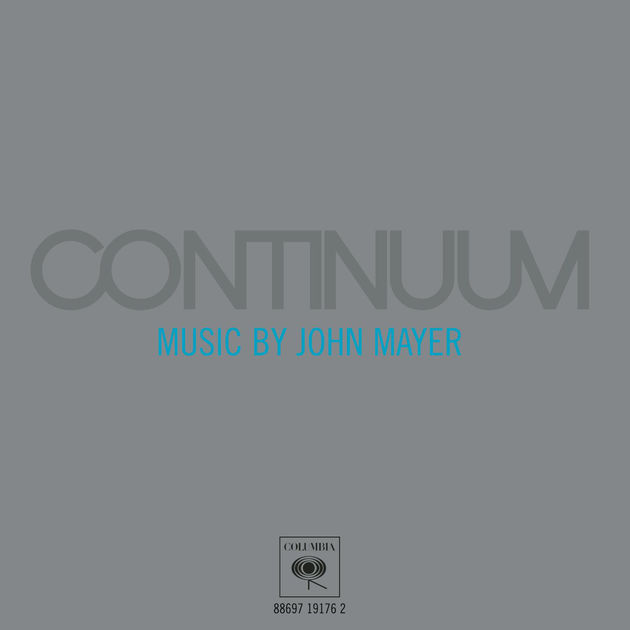
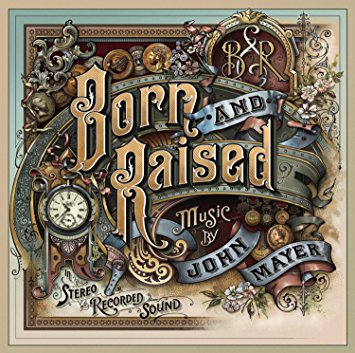
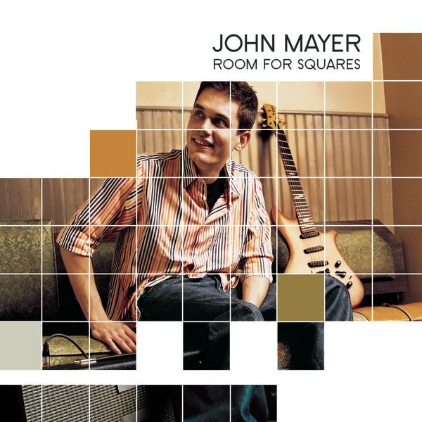

-

Continuum
-

Born and Raised
-

Room for Squares
-
Battle Studies
-

Paradise Valley
John Clayton Mayer is an American singer-songwriter, guitarist, and producer. He was born in Bridgeport, Connecticut, and raised in nearby Fairfield. He attended Berklee College of Music in Boston, but disenrolled and moved to Atlanta in 1997 with Clay Cook. Together, they formed a short-lived two-man band called Lo-Fi Masters. After their split, Mayer continued to play local clubs—refining his skills and gaining a following. After his appearance at the 2001 South by Southwest Festival, he was signed to Aware Records, and then Columbia Records, which released his first EP, Inside Wants Out. His following two full-length albums—Room for Squares (2001) and Heavier Things (2003)—did well commercially, achieving multi-platinum status. In 2003, he won the Grammy Award for Best Male Pop Vocal Performance for the single "Your Body Is a Wonderland".